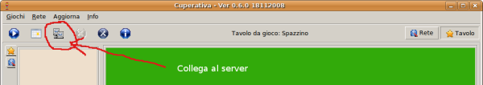
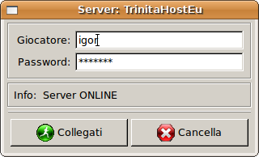
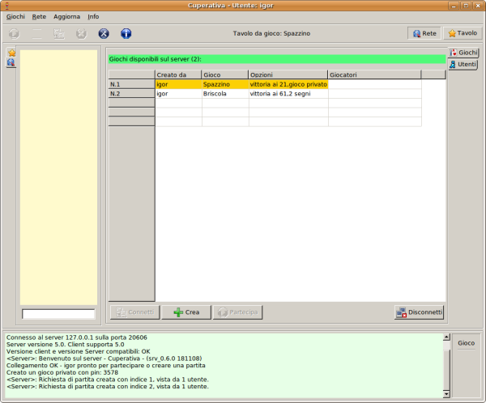
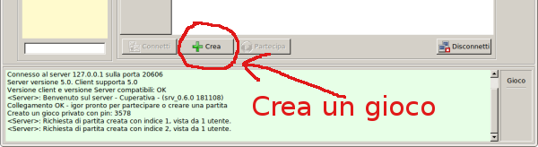
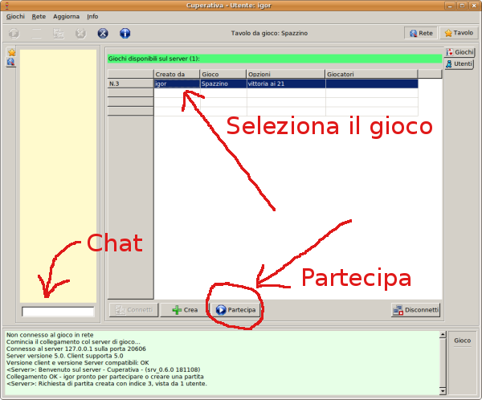

Precedente | Contenuto | Prossimo
Giocare in rete è molto semplice, basta collegarsi al server della cuperativa. Il pulsante "Connetti" serve proprio a questo (vedi la figura sotto).

Il programma si collega direttamente al server della Cuperativa all'indirizzo cuperativa.invido.it. Per stabilire la connessione bisogna mettere il proprio login con la password. Se non si è registrati, è possibile farlo usando il link cuperativa.invido.it. Dopo aver registrato un nuovo utente è necessario confermarlo via email, prima di poterlo utilizzare. È possibile giocare in rete come ospite, in questo caso non è necessario registrare alcun utente.

Una volta collegati, il programma mostra una lista di giochi ai quali è possibile collegarsi per iniziare a giocare. I giochi evidenziati in giallo sono privati. Per partecipare a queste partite è necessario conoscere un pin.

Si può creare un proprio gioco usando il pulsante "Crea".

Per partecipare ad una partita, bisogna cliccare su una linea dove è mostrato un gioco. Ora basta cliccare il pulsante "Partecipa" che si è abilitato automaticamente.
